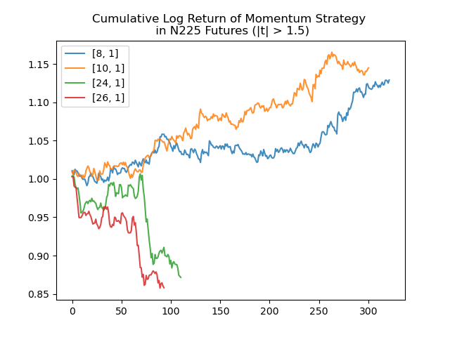

Introduction
In this article, we are using a momentum strategy with one parameter, to explore the profitability of intraday trading on multiple index futures, including HSI, XINA50, KOSPI, N225. Momentum strategies are simple, we follow the trend, hold it until the trend is reverting, then we will close the position. We are betting on the direction of the index, whether go up or go down, which is risky, however, momentum strategies are easy and simple to use with a reasonable return.
Data
Firstly we read our index futures data. We are using one minute index active futures data to backtest our strategy. The following are HSI index futures data (HI1) from 2018 to 2020. For HSI, the day session starts at 91500, and ends at 163000, we will trade on this session on HSI. There are 678 days in HSI futures data
Backtest results
We have 17 choices of parameters, the step size is 2, from 6 to 40, which capture the different sizes of momentum. We apply the same momentum model to our targets. Let's take a look at the result on HSI index futures.
We are using pandas.DataFrame.groupby to produce this result. The return is calculated in index points and it defines as

We calculate the mean, sum, standard deviation, count, and t-statistic of the return. This strategy is not bad in HSI, the maximum t-statistic of parameters is about 2, which is not bad. The range of parameters, from 12 to 24 can get a similar return, which means that the model is not overfitted.
Let us plot the cumulative log return of parameters from 12 to 24 in HSI.
x axis is the number of trading days, y axis is the cumulative log return.We can further break down into long or short signals. We can see that short momentum is more profitable than long signals in HSI.
We focus on the parameters range from 12 to 24, and we will plot the cumulative log return again. Let see how it looks.
The equity curve looks better, the number of trades cut by half, mean return per trade increases. In a larger size of parameters, the return of long signal is close to zero, if we ignore the long signal, we can benefit from paying less trading cost.
Can we beat the index?
The most important question of the trading strategy is can we use this strategy to beat the index? Let's take a look at the performance of the index first.
Since IB does not provide XINA50 index data, therefore we just skip it. XINA50 Log return from 20180101 to 20200930 is ~4.78%.If we holding the market portfolio on these markets except XINA50 from 20180102 to 20200930 we have a negative return. In HSI we can easily beat the index by using our momentum trading strategy.
Performance on KOSPI, N225, and XINA50
Because we have 3 more markets, 17 choices for each, and decomposed into long or short, we have too much data to look at, so we will just filter out some bad parameters using the criteria. We only want the parameters with the absolute value of t-statistic is greater than 1.5. Let's see how many parameters can pass our criteria.
There are still quite many parameters that can pass the criteria. Somethings interesting is in HSI (HI1) and KOSPI (KM1) only short momentum works, on N255 (NO1) only long momentum works, and in XINA50 (XU1) both long and short works. Let's visualize the cumulative log return on each market. We believed that the market microstructure would affect the behavior of the market, the results differ between markets
Works better when the signal is -1. Works better when the signal is -1.  Works better when the signal is 1. Works either the signal is 1 or -1.Conclusion
Our momentum strategy works better than its index, however, the return is not cost deducted, we have to consider the slippages and transaction cost before we implement the strategy. In the coming article, we will introduce one more parameter to improve this strategy.